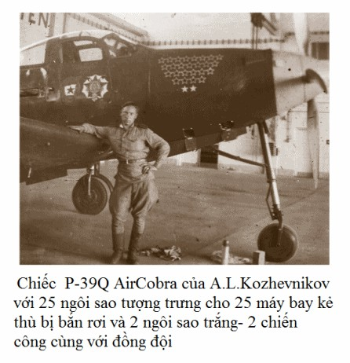

Chúng tôi yểm hộ các hoạt động chiến đấu của bộ binh ở vùng Naumberg - Bunslau. Trong cuộc chiến tranh Vệ quốc năm 1812, nguyên soái Mikhain Illarionôvich Cutuzôp đã đến thành phố này. Ông cũng mất tại đây. Gần con đường nhựa có một ngọn đồi nhỏ, dưới chân đồi ấy đã chôn cất trái tim của người thống soái Nga vĩ đại.
Những binh đoàn tăng và cơ giới đã qua đây hai ngày sau khi để lại cho những chiến binh ngọn lửa yêu nước của đất Nga. Bây giờ, họ nhanh chóng di chuyển về phía Tây, đập tan những phòng tuyến cuối cùng của phát xít.
Chúng tôi lại xuất kích bay dọc phòng tuyến mặt trận khoảng 150km. Gần đấy không có sân bay bê tông xi măng nào, còn những sân bay đất thì lại ẩm ướt. Tuyến hành trình dài đến mục tiêu và bay ngược lại tiêu tốn quá nhiều thời gian. Dọc đường đi, gặp gỡ những biên đội hai chiếc "Metxersmit" và "Phôcke-Vulph", nhưng chúng tôi cũng không ham tiến hành những trận không chiến lâu, vì vậy những cuộc gặp gỡ với bọn chúng đều kết thúc bằng những trận đánh nhỏ.
- Có lẽ, chiến tranh kết thúc đến nơi rồi, mà ngành Hậu cần của chúng ta không học được cách xây dựng sân bay cho nhanh, - Êgôrôp cau có.
Hậu cần làm sao được? Một ngày đêm bộ binh tiến được 30 - 40km. Qua 3-4 ngày là mình đã ở sâu trong hậu phương rồi. Chúng ta chỉ tiếc rằng Hítle không xây dựng ở hướng này lấy vài sân bay tốt thôi.
- Đến khi chiếm được sân bay mới, - tôi nói, - thì chúng ta phải sử dụng những thùng dầu phụ cho thận trọng. Đừng vội vã vứt chúng khi mới thấy địch xuất hiện, kẻo không lại không có đủ dầu liệu khi quay về.
Chúng tôi nhận nhiệm vụ đi yểm hộ những phân đội tiền tiêu ở khu vực Lauban. Hành trình phải bay dọc tuyến trước. Dọc đường, chúng tôi gặp 2-3 biên đội hai chiếc "Metxersmit". Thấy chúng tôi chiếm ưu thế, chúng không muốn giao chiến. Chúng tôi cũng không thèm đuổi theo. Mục đích chính của chúng tôi là phải yểm hộ đơn vị tăng. Lauban đây rồi. Tôi nối liên lạc với đại diện không quân ở binh đoàn tăng, ngày hôm nay Rưbkin giữ nhiệm vụ ấy - đấy là thanh tra kỹ thuật bay.
- Có thấy tôi không? - Rưbkin hỏi, cùng lúc thấy hai phát pháo hiệu bay vọt lên.
- Tôi thấy rồi.
- Người anh em ơi, hãy đến cứu bọn tôi đi, bọn Đức đã chia cắt đội hình chúng tôi rồi.
Nhưng chúng tôi đang ở trên máy bay tiêm kích thì cứu giúp thế nào được đây? Cứu bằng cách nào tôi chưa nghĩ được. Còn Rưbkin, có lẽ đứng nhìn máy bay chúng tôi với sự ghen tỵ và hy vọng.
- Hãy báo cáo qua đối không để "ông chủ" cử không quân cường kích đến đi, - đồng chí ấy đề nghị. - Dù chỉ là một phi đội thôi cũng được. Tôi ở đây sẽ dẫn dắt họ. Không thì gay go lắm.
Tôi báo cáo qua đối không về sở chỉ huy những đề nghị của bộ đội tăng và nhận được câu trả lời: "Chúng tôi sẽ cử đến ngay. Cố gắng giữ vững".
Trong khi ấy, chúng tôi phát hiện thấy một tốp lớn những máy bay "Phôcke-Vulph" đeo bom lặc lè. Rõ ràng là bọn chúng đến oanh kích đơn vị tăng của chúng ta rồi. Chúng mày không đến được đâu, bọn đểu giả ạ.
Nhanh chóng chiếm vị trí có lợi, toàn đội hình của tôi lao vào tấn công bọn Đức. Bọn chúng vội vã vứt bom bừa bãi, nhưng rồi thấy có ưu thế về số lượng, chúng lại không rút lui khỏi chiến trường. Chúng tự do đánh thế nào tuỳ ý, điều ấy dẫn đến mất sự chỉ huy, điều hành. Chúng tôi thì ngược lại, hành động thống nhất hiệp đồng giúp đỡ lẫn nhau và giành được thế chủ động.
Chẳng mấy chốc, chúng tôi đã bắn rơi 3 máy bay địch. Nhưng điều ấy không tác động được đến lũ phát xít. Dùng tốc độ lớn, chúng bay vượt ngang qua chúng tôi, cố đưa máy bay chúng tôi vào trong kính ngắm. Bọn chúng rút chạy sau khi bị chúng tôi bắn rơi thêm hai chiếc nữa.
Trong trận chiến đấu với lực lượng chênh lệch như vậy mà chúng tôi bắn rơi được 5 máy bay địch và tổn thất có một chiếc, - thì là cả một chiến thắng lớn.
Đài dẫn dắt mặt đất thông báo: "Bộ đội tăng gửi lời cảm ơn các phi công". Tâm trạng trong trận chiến thêm phấn khích nhờ lời cảm ơn của bộ đội mặt đất. Cảm giác của chiến thắng ư? - Không, hình như là như nhau!
Sau khi chờ biên đội khác lên thay thế, chúng tôi lấy hướng quay về sân bay.
Sau mấy ngày tham gia chiến dịch, bộ đội của Phương diện quân đã đẩy tuyến trước tiếp tục chuyển về phía Tây - đến tận bờ sông Nhâyxơ. Đến đây thì bộ đội dừng tấn công. Chúng tôi, đương nhiên không thể hiểu được đấy là lần dừng chân cuối cùng trước khi chiến dịch quyết định. Nhưng cũng như tất cả những người chiến binh từng trải, đều đoán là sẽ có trận tấn công lớn. Và chúng tôi chờ đợi với sự lo lắng, trong công việc bận bịu thường xuyên ngoài chiến trường.
Mưa và những ngày hửng nắng của mùa Đông tan băng tuyết đã làm cho tất cả các sân bay dã chiến nhão nhoét, vì vậy, trên sân bay với những điều kiện thuận lợi như của chúng tôi tập trung gần 16 trung đoàn không quân. Ở đó gồm đủ những máy bay ném bom, máy bay cường kích, máy bay tiêm kích. Để phân tán bớt lực lượng, trung đoàn chúng tôi phải cơ động đến đất Balan.
Ở đây tôi lại được gặp Côlia Orlôpxki. Đồng chí đi nằm viện, nhưng trước khi các bác sĩ viết dòng chữ "chuyển đến Hội đồng giám định" thì đồng chí đã biết mình sẽ bị cắt bay. Đấy là một đòn giáng nặng nề với một con người mà máy bay và bầu trời từng chiếm một vị trí quan trọng trong cuộc sống. Orlôpxki xúc động mạnh còn bởi thời gian bị bắt làm tù binh, lòng căm thù bọn phát xít như tảng đá nặng đã đè chặt lên trái tim suốt những tháng ngày ấy. Nó chí giải thoát được khi trao cho đồng chí đôi cánh bay của máy bay tiêm kích với vũ khí mạnh mẽ của nó.
Ngay ngày đầu tiên khi chúng tôi cơ động đến Ruđinca. Orlôpxki đã đến thuyết phục tôi trao máy bay cho đồng chí ấy.
- Tôi không tin các bác sĩ, - đồng chí sôi nổi khẳng định với tôi. Chẳng lẽ tôi lại không biết tôi hơn họ hay sao? Hãy tự phán xét đi tôi đề nghị bay trên máy bay tiêm kích làm gì. nếu như tôi cảm thấy tôi không thể bay nổi? Nào đề nghị làm gi?
Đồng chí lập luận với một giọng như van xin, và tôi suýt đầu hàng trước những lời thuyết phục của người bạn cũ. Tôi chỉ lo ngại một điều là Orlôpxki đã có giãn cách bay đến nửa năm rồi. Theo quy định thì đồng chí ấy không thể bay đơn được nếu không có những chuyến bay kèm và không có thời gian chuẩn bị. Nhưng khổ nỗi là trung đoàn tôi không có máy bay huấn luyện hai chỗ ngồi. Còn Orlôpxki thì cứ bám theo tôi từng bước. Cuối cùng tôi cũng phải chấp nhận.
Chúng tôi cùng ra sân đỗ. Côlia ngồi vào trong buồng lái, mở máy, lăn thử hai vòng và cất cánh. Đồng chí lập một vòng theo hàng tuyến, tiếp tục làm vòng thứ hai và định về hạ cánh thì lúc ấy lại có chiếc máy bay vận tải "Li-2" vừa tiếp đất. Vòng ngược lại trên đường cất hạ cánh nó lăn chậm chạp. Orlôpxki không thể hạ cánh được, đành phải bay lại vòng hai.
Thường là vậy! Không biết thế nào gió lại nổi, trời lại tối sẫm lại, và bất ngờ tuyết lại rơi dày đặc. Tầm nhìn xấu đột ngột, chỉ nghe tiếng động cơ mới đoán được máy bay đang ở đâu. Trong những giây phút ấy, người dưới đất lo lắng hơn người trên trời nhiều. Không xa lắm có ống khói xây bằng gạch của một nhà máy liên hợp, còn phi công thì ấn sát mặt đất. Quyết định đúng đắn nhất là đi sân bay dự bị. Liệu Orlôpxki có nhận ra điều ấy không? Tôi không thể giúp được gì Orlôpxki vì trên máy bay hồi ấy không có máy thu.
Những phút chờ đợi kéo dài như vô tận. Theo tiếng động cơ. tôi xác định đồng chí ấy đang trên hàng tuyến. Đấy, bây giờ đang ở vòng 4, thu bớt một chút vòng quay. Liệu có đốỉ chuẩn được đường băng không?
Đồng chí đã thu hết cửa dầu. Vài giây sau - máy bay đã tiếp đất trên đường băng sau khi vượt ra khỏi màn tuyết. Quá giỏi! Orlôpxki quá giỏi! Nửa năm trời không bay lại hạ cánh chuyến đầu tiên trong điều kiện thời tiết như vậy...
Rạng rỡ bởi niềm vui, Côlia hỏi tôi:
- Thế nào, tôi trả bài thi được chứ?
- Tuyệt vời!
- Có nghĩa là tôi sẽ được nện bọn phát xít?
- Sẽ nện, Côlia ạ!
Chúng tôi ở sân bay này 10 ngày. Orlôpxki tập bay hàng ngày và đã đứng vững vàng trong đội ngũ phi công chiến đấu.
Chẳng bao lâu, mở màn chiến dịch tiêu diệt tập đoàn quân địch ở phía Tây thành phố Opeln, và binh đoàn chúng tôi lại bay chuyển sân đến sân bay mới. Đối địch với chúng tôi là lực lượng của phi đội 52 của Đức. Đấy là những phi công được chọn lựa từ những phi công kỳ cựu của các binh đoàn. Trên cánh quạt của các máy bay, chúng vẽ một vòng xoắn màu trắng - dấu hiệu phân biệt với các phân đội khác. Nhưng chúng tôi đã giao chiến, đã tiêu diệt bọn ấy trong các trận không chiến rồi. Mà những trận chiến thì xảy ra liên tục. Có những lần, trong một chuyến xuất kích thôi mà chúng tôi phải tiến hành những ba trận không chiến với địch.
Tôi dẫn đầu biên đội 8 chiếc. Đội hình chiến đấu chúng tôi bố trí theo tầng; tầng dưới - tốp tấn công gồm biên đội 4 chiếc, tầng trên - là tốp yểm hộ. Trên đường đến thành phố Nhâyxơ chúng tôi gặp 8 chiếc "Metxersmit". Bọn phát xít lao vào tấn công đối đầu. Nhưng tốp của Cuzơmin đã nện chúng từ phía sau. Một chiếc "Metxersmit" bốc cháy ngay lập tức. Gần như cùng lúc, biên đội tôi cũng bắn rơi một chiếc. Đội hình chiến đấu của chúng bị phá vỡ và chúng rút khỏi chiến trận.
Trong thời gian ấy ở phía Tây Bắc Nhâyxơ trên cánh đồng đất cày đang diễn ra trận đấu tăng. Trong trận đấu này, mỗi bên tham chiến hàng mấy chục chiếc tăng. Ba chiếc đã thành ba đống lửa. Đài dẫn dắt thông báo cho chúng tôi biết có một tốp lớn máy bay "Phôcker-Vulph" đang tiến đến khu chiến.
Toàn biên đội chúng tôi chiếm vị trí có lợi. Bọn địch phát hiện được chúng tôi, vòng lại hướng đối đầu. Các máy bay lao vào tấn công đối đầu, sau đó chuyển sang phương thẳng đứng. Tôi bám sau đuôi một thằng phát xít, ngắm góc đón. Bất ngờ, đúng vào vị trí máy bay địch thấy bùng lên một cụm khói đen, các mảnh vỡ văng tứ tung, một đám mây khói... Thế là thế nào nhỉ? Tôi còn chưa kịp bắn, sao máy bay đã nổ. Có lẽ nó đã va vào viên đạn pháo cao xạ về lý thuyết mà nói, những cuộc "va chạm" như thế hoàn toàn có khả năng xảy ra và chắc hẳn một viên nào đó đã chạm. Đương nhiên rồi, trong trận chiến hỗn độn, viên đạn nào biết đâu là ta, đâu là địch. Nó đã va vào địch. Mong những viên đạn sau cũng vậy.
Trong những phút sau, địch mất thêm hai máy bay nữa. Sau đó, từng biên đội địch rút chạy về phía Tây. Chúng tôi cũng đã mệt lử, chẳng thèm đuổi theo nữa.
Sau ba ngày chiến đấu, quân đội chúng ta đã quây tập đoàn quân địch ở phía Tây thành phố Opeln trong vòng vây. Nhưng bọn địch dù cảm thấy đã ở trong chảo rồi vẫn không chịu đầu hàng. Khi ấy chúng tôi nhận được lệnh oanh kích bọn chúng. Chúng tôi tiến hành những chuyến xuất kích, tập trung hoả lực công kích những chiến hào. Hệ thống pháo phòng không địch bị chế áp, các khẩu đội pháo hầu như tê liệt. Còn duy nhất là những tiêm kích của bọn phát xít ngày ngày ngăn cản hoạt động của chúng tôi mà thôi. Chẳng bao lâu sau chúng cũng không còn xuất hiện trên bầu trời nữa. Địch hoàn toàn bó tay.
Ngày 22 tháng 3, Bộ chỉ huy chúng ta quyết định oanh kích sân bay dã chiến của địch, sân bay Svâyđnhis. Lực lượng không quân tiêm kích địch đóng trên sân bay này. Sân bay được bảo vệ cẩn mật. Trước, hết cần phải phong toả sân bay. Nhiệm vụ quét sạch bầu trời giao cho tốp tiêm kích của đại tá sư đoàn trưởng Goregliađ phải hoàn thành trước khi những máy bay ném bom của ta xuất hiện.
Trên đường đến sân bay Svâyđnhis, chúng tôi gặp 8 chiếc "Metxersmit". Chúng lao vào tấn công biên đội 4 chiếc của Êgôrôp bay ở độ cao thấp hơn. Tôi cùng số 2 bổ đến ứng cứu. Trận đánh diễn ra ở độ cao 400 - 600m ngay trên đỉnh sân bay, rất ác liệt. Những tiếng gầm rú của các động cơ máy bay vang đi rất xa. Bọn địch cố về hạ cánh vì dầu liệu chúng đã cạn. Còn chúng tôi thì dùng mọi cách để kéo dài trận đấu. Chúng tôi bắn cháy hai chiếc "Metxersmit", trong đó một chiếc do Êgôrôp bắn, cắm thẳng xuống giữa cánh đồng.
Cuối cùng, đến phút thứ 17 của trận đánh, ở phía Tây sân bay, nơi đỗ các máy bay, được phủ một thảm bom. Vài giây sau đó, kho nhiên liệu cũng nổ tung. Ba biên đội bay theo đội hình 9 chiếc máy bay ném bom đã bay đến đúng mục tiêu, tiêu diệt khối lượng lớn khí tài của địch.
Chúng tôi hoàn thành thêm một nhiệm vụ chiến đấu nữa.
Một thời gian ngắn sau đó, quân đoàn địch ở phía Tây Opeln nằm trong vòng vây đã bị xoá sổ. Các phi công của chúng ta đã thấy phần còn sống sót thật thảm thương đi theo từng đoàn ngang qua sân bay. Ít lâu sau, Svâyđnhis cũng thất thủ - đấy là thành phố với lâu đài cổ trên núi của các lãnh chúa. Chiếc khoá tính ra có đến hơn 700 năm tuổi. Những bức tường xám của nó bảo vệ những bức tranh của những trận đánh cổ xưa. Thành phố và lâu đài cổ đều vắng tanh.
Một lần nữa chúng tôi lại lên đường.
Binh đoàn chúng tôi chuyển sân đến một sân bay tạm ở Likhtenvanđau. Sân bay rất nhỏ hẹp, chật chội, không thích hợp. Ban ngày thì chúng tôi chuẩn bị chỗ đỗ cho máy bay, ngụy trang tránh sự trinh sát bằng đường không, thiết kế những đường lăn.
Kể từ ngày đó, trung đoàn chúng tôi được giao những nhiệm vụ nhỏ lẻ, chủ yếu là trinh sát lực lượng địch và yểm hộ quân bộ binh di chuyển đến nơi tập kết, những chuyến bay vào trong hậu phương địch diễn ra ổn: ít khi chúng tôi mới gặp tiêm kích địch. Bọn cao xạ thì chỉ bắn khi chúng tôi bay vào vùng phòng thủ chiến thuật hay ở trên các khu vực dân cư lớn. Nhưng đôi khi chúng tôi cũng phải bay theo những hành trình phức tạp - đường bay cắt qua khu vực tập trung quân lớn của địch.
Một lần, cần phải trinh sát sự di chuyển của các đoàn xe trên tuyến đường từ mặt trận đến Orezđen và phải tiêu diệt lực lượng không quân trên các sân bay trong dải hành lang này.
Pixtunôvich và Zaisep cất cánh đi trinh sát. Họ bay vào chiều sâu chưa đầy 50km thì đã gặp địch. Hai phi công tiêm kích Xô viết không thể chống chọi lại với 12 chiếc "Metxersmit" được. Nhiệm vụ trinh sát đành phải bỏ dở. Còn Bộ tham mưu cấp trên thì lại yêu cầu cung cấp ngay những tin tức về địch. Tôi quyết định trực tiếp cùng với Sapsan đi làm nhiệm vụ.
Chúng tôi bay cắt qua phòng tuyến mặt trận ở độ cao cực thấp, sau đó bay dọc núi Xuđetxki ở độ cao thấp, không sử dụng đối không. Chúng tôi bay ở độ cao thấp nên radar địch không phát hiện được, còn không liên lạc qua đối không thì bọn địch không thể định vị nổi vị trí của chúng tôi. Chẳng mấy chốc nghe chừng đến vùng Khemnhis rồi, sau khi kéo lên lấy độ cao, chúng tôi vòng về hướng Đresđen. Thời gian ấy, đấy đã là sâu trong hậu phương địch rồi. Thành phố lớn vàng rực rỡ dưới ánh sáng mặt trời, trên bến cảng những tàu sông đang neo đậu. Cũng ở đấy thấy thấp thoáng những xà lan chở hàng. Ở vùng phía Đông, chúng tôi phát hiện thấy một sân bay, đỗ đầy những máy bay vận tải "Ju-52". Một chiếc vừa tiếp đất xong và đang lăn vào sân đỗ.
Bọn phát xít phát hiện khi chúng tôi ở trên đỉnh sân bay. Hoả lực phòng không nã đạn ngay tắp lự, nhưng đạn đều nổ ở phía sau chúng tôi một khoảng xa. Bây giờ là lúc cần phải tăng cường cảnh giới: không còn nghi ngờ gì nữa là trên hành trình của chúng tôi sẽ xuất hiện tiêm kích địch. Đúng là chúng đã đến, 8 chiếc "Metxersmit". Bọn chúng khả năng là được dẫn dắt từ mặt đất. Tham chiến bây giờ quả là liều lĩnh, khó mà tính đến sự chiến thắng được bởi bọn địch có ưu thế về số lượng, hơn nữa bất kể lúc nào bọn tiêm kích cũng có thể cất cánh từ sân bay lên để bổ sung lực lượng. Cần phải khôn ngoan thoát khỏi địch, đồng thời lại trinh sát được thêm các mục tiêu cần thiết khác nữa - như tuyến đường giao thông, các sân bay mà bọn "Metxersmit" cất cánh truy đuổi theo chúng tôi chẳng hạn.
Những chuyến trinh sát thường là nguy hiểm và thú vị. Anh bay trên đất địch, bị lực lượng pháo phòng không địch bắn và tiêm kích địch đuổi chặn. Anh có thể một mình phải chống chọi với 50 kẻ thù. Lực lượng đến trợ giúp anh thì không có. Ở đấy tất cả chỉ trông cậy vào sức lực, lòng dũng cảm, sự khôn khéo và can đảm của chính anh mà thôi.
Lần này cũng vậy, để thoát khỏi 8 thằng tiêm kích phải thực sự biết cách và tính toán thật chuẩn xác. Chúng tôi lao xuống đến độ cao 100 m và bay về phía sân bay. Nó kia rồi. Trên sân bay đỗ hàng trăm chiếc "Metxersmit” và "Phôcker-Vulph". Cao xạ bắn một loạt ngắn. 8 thằng tiêm kích không thấy chúng tôi nữa. Chúng tôi vòng về phía rừng. Gần như chúng tôi bay sát ngọn cây trong thời gian mấy phút, sau đó chúng tôi vòng sang tuyến đường quốc lộ, ở đây sự đi lại hai chiều thật nhộn nhịp. Chúng tôi lại vòng tiếp. Bọn tiêm kích địch ở rất xa. Chúng tôi bay theo hướng ngược lại, cắt qua phòng tuyến mặt trận. Tất cả những tin tức thu lượm được, chúng tôi báo cáo ngay lên Bộ tham mưu cấp trên.
Ngày ngày quan sát sân bay địch, chúng tôi thấy rằng bọn Đức hầu như không còn những máy bay ném bom nữa. Số lượng máy bay tiêm kích cũng không còn đông như cũ. Không quân Hítle đã thở hắt ra rồi. Nền công nghiệp Đức không đủ sức bổ sung cho những tổn thất trong các trận chiến.
Bọn phát xít sử dụng lực lượng phá hoại để tiêu diệt các máy bay của chúng ta trên sân đỗ. Một trong số ấy đã bị tóm gọn ngay gần sân bay của chúng tôi. Tên ấy được trang bị chất cháy hỗn hợp, những quả mìn nam châm nhỏ, lựu đạn và súng máy. Trong ví đựng giấy tờ của hắn có một số ảnh. Đấy là những nghệ sĩ nổi tiếng của các nhà hát Beclin. "Người hâm mộ" nghệ thuật đã trở thành kẻ thù theo đúng nghĩa.
Sợ bị hình phạt, thằng Đức khai hết nhiệm vụ của hắn trong cuộc hỏi cung. Nó lắp bắp: "Hítle sẽ chết, phát xít sẽ chết" - rồi quỳ lạy người sĩ quan Xô viết. Nó bị giải về hậu phương.
... Các lực lượng của quân đội ta: tăng, pháo binh, bộ binh cơ giới hành quân theo khắp ngả đường ra mặt trận. Họ không chỉ hành quân vào ban đêm mà cả ban ngày nữa. Tiêm kích chúng tôi yểm hộ vững chắc cho họ dọc đường hành quân để không bị oanh kích từ trên không và không bị trinh sát bằng đường không của địch phát hiện.
Ngày 15 tháng 4, trung đoàn chúng tôi bay ở độ cao thấp, bí mật chuyển sân đến một sân bay khác, gần phòng tuyến mặt trận hơn. Sáng ngày hôm sau, toàn trung đoàn tề tựu trong đội ngũ dưới lá cờ chiến thắng. Trong sự im lặng trang nghiêm, mệnh lệnh và chỉ thị của Bộ tư lệnh chiến trường ra lệnh cho quân đội tấn công vào Beclin, vào sào huyệt của kẻ địch đã được đọc. Những dòng ngắn ngủi đập vào tim của các phi công. Chúng tôi bước vào trận đánh quyết định cuối cùng này!
Sau cuộc mít tinh, trên thân các máy bay được kẻ các dòng chữ: "Chỉ có tiến lên phía trước!", "Tiến về Beclin!", "Chiếm Beclin", "Trả thù cho những đồng đội hy sinh!". Còn ngoài mặt trận thì đã nghe thấy tiếng gầm của pháo hạng nặng, tiếng gầm chưa hề thấy trong suốt thời gian chiến tranh.
Lệnh "Lên máy bay!", vang lên. Các máy bay tiêm kích lao vào không trung. Bầu trời đen kín các biên đội máy bay cường kích và ném bom. Không quân địch hầu như không tồn tại. Một vài tốp nhỏ lẻ của địch không chống lại được sự tấn công, tiêm kích của chúng không cho chúng bén mảng kể cả đến gần tuyến trước.
Quân đội Xô viết đập vỡ phòng tuyến địch bằng lửa và sắt thép, vượt sông Nhâyxơ, cố gắng mở rộng chiến trường. Ngày 18 tháng 4, những đơn vị tiền tiêu đã tiến đến gần Spre, tham chiến với lực lượng phía Bắc thành phố Spremberg.
Chúng tôi sử dụng từng phi đội đi yểm hộ bộ đội các đơn vị tiền tiêu. Các máy bay cường kích và ném bom nện bọn địch ở bờ phải sông Spre. Bọn pháo cao xạ giăng lưới đạn về phía họ, nhưng họ vẫn tiếp tục bay. Một nhóm đã công kích xong, lấy hướng quay về phía Đông. Bất ngờ xuất hiện biên đội 4 chiếc "Metxersmit", chúng chia thành hai tốp công kích những máy bay cường kích từ hai phía. Biên đội hai chiếc địch bên trái gần chúng tôi. Bằng động tác nửa vòng lộn xuống, tôi bám luôn được vào đuôi một thằng "Metxersmit", số 2 của tôi bám thằng khác. Bọn phát xít phát hiện ra chúng tôi và đành bỏ ý định. Sapsan chặn thằng số 2 của biên đội "Metxersmit" và gần như bắn thẳng vào nó. Nhưng biên đội 2 chiếc phía bên phải đã kịp công kích - một chiếc cường kích bùng cháy. Một chiếc dù mở, phi công thứ hai trong tổ bay đã hy sinh trong buồng lái.
Trận đánh chiếm Spremberg mang tính chất khác thường. Bọn địch, chừng như quyết định kết liễu sớm còn hơn là rút lui.
Vào khoảng buổi trưa, phi đội chúng tôi gặp 20 chiếc "Phôcker-Vulph" và "Metxersmit" trên đỉnh thành phố. Gutrêch cùng phi đội của mình và các tiêm kích của sư đoàn bạn đã đến ứng cứu kịp thời.
Tôi bám vào đuôi thằng "Phôcker-Vulph" và điểm hoả. Thằng phát xít kéo máy bay lên gấp. Tôi truy kích, tiếp tục bắn. Thằng "Phôcker-Vulph" lượn vòng, xoắn xuống và cắm xuống đất. Cách tôi không xa lắm, thằng "Metxersmit" bổ nhào vào Gutrêch định công kích. Tôi nã một tràng cắt ngay đường bay của địch. Những viên đạn lửa nổ làm máy bay tung ra từng mảnh. Khi đấy, tôi không thể biết được rằng đấy lại là những chiếc máy bay địch cuối cùng tôi bắn được trong cuộc chiến tranh Vệ quốc vĩ đại. Nếu tôi biết được điều ấy thì tôi đã ngắm xem nó rơi xuống dưới vỡ tung như thế nào, và tiễn nó với những nhận xét nực cười. Nhưng lúc ấy không thể sao nhãng, không cơ động mà rồi có thể mất cả mạng sống của mình.
Các phi công chiến đấu rất dũng cảm và kiên quyết. Chúng tôi bắn rơi 8 chiếc tiêm kích địch. Chỉ đến lúc ấy bọn địch mới rút chạy khỏi vòng chiến.
Chúng tôi chưa kịp hiểu trận chiến đã kết thúc thì lại nhận lệnh từ sở chỉ huy, oanh kích bọn bộ binh cơ giới của địch đang cơ động đến gần.
Lập thành một vòng khép kín, chúng tôi nện bằng các loại hoả lực trên máy bay. Các bóng dáng địch thấp thoáng trên đường, các ô tô bốc cháy. Mỗi người trong chúng tôi chuyển điểm ngắm sang khẩu đội pháo. Bất ngờ tôi nghe thấy giọng:
- Vĩnh biệt tất cả anh em!
Trái tim tôi bỗng lạnh ngắt: giọng của Gutrêch rồi. Ngay lúc ấy, trước mắt tôi, chiếc tiêm kích bốc lửa của đồng chí đâm thẳng vào đội hình xe bọc thép của địch.
Người học trò ưu tú, người bạn chiến đấu của tôi đã hy sinh như vậy đấy. Sau đó vài ngày, chủ tịch đoàn Xôviết tối cao Liên Xô đã truy tặng Gutrêch danh hiệu anh hùng Liên Xô.
Gần Spremberg - Nhicôlai Givôp đã bị cướp khỏi cuộc sống. Máy bay của đồng chí bị đạn cao xạ bắn cháy và rơi gần đường quốc lộ.
Sau khi chiếm được Spremberg, không quân của bọn Hítle không còn sức kháng cự nữa. Duy nhất có một lần tôi nhìn thấy hai chiếc máy bay phản lực bay với tốc độ lớn cách xa biên đội của chúng tôi.
Đế không bị tụt lại khỏi quân đội đã vượt lên phía trước, chúng tôi cơ động đến sân bay mới và sau đó mấy ngày, chúng tôi nện vào đội quân tụt hậu của phát xít gần sông Enbơ và oanh kích vào bọn phòng thủ trên phòng tuyến vào Beclin.
Và rồi cuối cùng cũng đến Beclin. Quân đội của chúng ta bắn phá thành phố. Phía cánh trái của Phương diện quân, bộ đội ta đã vượt đến Enbơ.
Thêm một ngày nữa - lá cờ đỏ của đất nước Xôviết đã tung bay trên nóc toà nhà quốc hội Đức.
... Phi đội lăn ra vị trí cất cánh, chuẩn bị xuất kích đi làm nhiệm vụ. Các phi công báo cáo đã sẵn sàng, chỉ giây lát nữa thôi là các máy bay sẽ chạy đà.
- Đình chỉ cất cánh! - Bất ngờ giọng của Tham mưu trưởng vang lên. Đã có lệnh dừng các hoạt động chiến đấu.
- Chiến thắng rồi, các đồng chí ơi! Vinh quang thay đất nước Xôviết! - Tôi hét qua đối không.
- Hoan hô! - Các phi công đồng thanh hô.
Không nhớ mình vui sướng đến thế nào, tất cả chúng tôi đồng loạt nổ súng.
Sân bay tràn ngập niềm hân hoan. Các đồng chí thợ máy ôm hôn các phi công.
- Chiến thắng rồi! Chúng ta sống đến ngày chiến thắng rồi! - Những người bạn chiến đấu sôi nổi nói.
- Thật tiếc làm sao trong ngày vui thế này lại vắng bóng Môtuzcô, Gutrêch, Obôrin... Chúng ta không hề thấy xấu hổ khi phải khóc, - Tamara nói.
Trước mắt chúng tôi những đồng đội hy sinh trong các trận không chiến lại hiện lên. Và tôi có cảm giác giờ phút này đây họ cũng đang đứng cạnh chúng tôi trên sân bay đón mừng chiến thắng.

HẾT